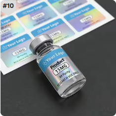

The short answer: sheets are convenient when operators apply labels by hand, quantities are small or several designs need to stay separated. Rolls are the practical default for dispensers and automatic or semi-automatic applicators. Both can work for hand application, and neither format makes a label waterproof or more adhesive by itself.

Compare the workflow before comparing unit price
| Sheet labels | Easy to separate by SKU, count in small batches and place on a bench for hand application or proof review. |
|---|---|
| Roll labels | Continuous supply for repeat hand work, dispensers, thermal overprinting and roll-fed application equipment. |
| Mixed designs | Possible in either format when production allows, but the sequence, count and changeover plan must be agreed before printing. |
| Durability | Determined by the material, ink, laminate, adhesive and use conditions, not by roll or sheet presentation. |
When sheets make sense
Sheets suit early packaging tests, sampling and small manual batches where the operator needs quick access to several SKUs. They lie flat, can be stored in folders and make it easy to inspect color or copy before application. They also reduce the need to specify a core or winding direction. However, peeling small labels from a flat sheet can become slow when daily volume grows.
When rolls make sense
Rolls organize a repeated label sequence and work with simple hand dispensers as well as production equipment. They are usually the correct starting point when a buyer expects recurring runs, variable data printing or machine application. A roll order needs more operational information: core diameter, maximum outside diameter, label orientation, gap, quantity per roll and unwind direction.


Mixed SKUs need a counting plan
A buyer may need 10 colors, strengths or product codes in one order. Do not assume every SKU can be mixed randomly on one roll or sheet. Ask how labels will be packed, identified and counted. For rolls, decide whether each SKU has its own roll or whether a controlled sequence is acceptable. For sheets, confirm how many designs appear per sheet and whether each stack is labeled.
Machine application changes the question
Once a label enters an applicator, format is no longer a preference. Send the machine specification or a photo of the current roll label. The converter needs to match web width, core, roll diameter, gap, leading edge and unwind direction. The label must also remain within the vial's straight-wall area so the applicator does not bridge a shoulder or base curve.
Do not choose format from MOQ alone
Some buyers assume sheets are always cheaper at low quantity and rolls are always cheaper at high quantity. Production equipment, die setup, number of SKUs, material and finishing can change that calculation. Ask for both options when the workflow can accept either, and compare the total application effort rather than only the printed unit price.
Format decision checklist
- How many labels are applied per day or per production run?
- Are labels applied by hand, dispenser or machine?
- How many SKUs and artwork versions must remain separated?
- Will variable data be printed after delivery?
- Does existing equipment require a specific core, gap or unwind direction?
- How will rolls or sheets be counted, stored and identified?
- Is the first order a test or the beginning of regular reorders?
What to send for a clear quote
Send label size, material, quantity per SKU, total quantity, application method and photos of the vial and any dispenser or machine. If you need rolls, include core size, maximum roll diameter, unwind direction and quantity per roll. RP can show the proposed orientation in a free digital proof before production.
Order the format your team can actually use
Send your SKU count, daily application volume and equipment details. We can compare roll and sheet supply before the quote is finalized.
Request a Format ReviewFAQ
Are roll labels only for machine application?
No. Rolls can be applied by hand and often work well with a bench dispenser. Machines simply add tighter roll specifications.
Are sheet labels better for small peptide label orders?
They can be convenient for samples, mixed designs and small hand-applied batches. The converter's production method and your repeat-order plan still matter.
Does roll or sheet format change label durability?
No. Durability comes from the face film, ink, finish, adhesive, bottle surface and storage conditions.